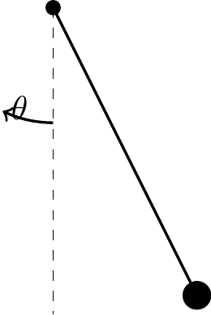

23 Generalized Coordinates and Virtual Work
So far, every equation of motion in this course has come from Newton’s second law or its rotational counterpart, applied directly to free-body diagrams. For systems with several moving parts and constraints, this bookkeeping becomes heavy: every constraint force (pins, rollers, rods, cables) must be introduced explicitly, even though these forces do no work and never appear in the final answer. Lagrangian mechanics reformulates dynamics in terms of energy rather than force, and automatically eliminates workless constraint forces from the equations of motion.
23.1 Configuration Space and Generalized Coordinates
A system with \(N\) particles has, in principle, \(3N\) Cartesian coordinates. If the system is subject to \(m\) independent holonomic constraints (equations of the form \(\phi_k({\bf r}_1,\dots,{\bf r}_N,t) = 0\)), the number of independent coordinates needed to specify the configuration drops to \[\begin{align} n = 3N-m. \end{align}\] This number \(n\) is the system’s number of degrees of freedom (DOF). Any set of \(n\) independent parameters \(q_1,\dots,q_n\) that uniquely fixes the configuration of the system is called a set of generalized coordinates. They need not have units of length — an angle, an arc length, or a stretch are all valid choices.
Every position vector in the system can then be written as a function of the generalized coordinates (and possibly time, if a constraint is itself time-dependent): \[\begin{align} {\bf r}_i = {\bf r}_i(q_1,q_2,\dots,q_n,t), \qquad i=1,\dots,N. \end{align}\]
NoteNote
A constraint is holonomic if it can be written as an algebraic equation among the coordinates (and time). Rolling without slipping in one dimension is holonomic; a general nonholonomic constraint restricts velocities without reducing the accessible configurations, and is beyond the scope of this course.
23.2 Generalized Velocities
Differentiating \({\bf r}_i(q_1,\dots,q_n,t)\) with the chain rule gives the velocity of particle \(i\) in terms of the generalized velocities \(\dot{q}_1,\dots,\dot{q}_n\): \[\begin{align} {\bf v}_i = \frac{d{\bf r}_i}{dt} = \sum_{j=1}^n\frac{\partial {\bf r}_i}{\partial q_j}\dot{q}_j+\frac{\partial {\bf r}_i}{\partial t}. \end{align}\] The last term is present only when the constraints defining \({\bf r}_i\) depend explicitly on time (e.g., a bead on a wire that is itself being driven by a motor).
A useful identity follows immediately by inspection: since \({\bf v}_i\) is linear in the \(\dot q_j\)’s with coefficients \(\partial{\bf r}_i/\partial q_j\) that do not involve any \(\dot q_k\), \[\begin{align} \frac{\partial {\bf v}_i}{\partial \dot{q}_j} = \frac{\partial {\bf r}_i}{\partial q_j}. \end{align}\] This “cancellation of the dots” identity is the key algebraic step used to derive Lagrange’s equations in the next lecture.
23.3 Virtual Displacements
A virtual displacement \(\delta{\bf r}_i\) is an infinitesimal, instantaneous, imaginary displacement consistent with the constraints at a frozen instant of time \(t\). Because time is held fixed, the \(\partial{\bf r}_i/\partial t\) term does not appear: \[\begin{align} \delta {\bf r}_i = \sum_{j=1}^n\frac{\partial {\bf r}_i}{\partial q_j}\delta q_j. \end{align}\] Here \(\delta q_1,\dots,\delta q_n\) are arbitrary, independent infinitesimal variations of the generalized coordinates. This is the essential distinction between a virtual displacement \(\delta{\bf r}_i\) and an actual (kinematically realized) infinitesimal displacement \(d{\bf r}_i\), which does include the \(\partial{\bf r}_i/\partial t\,dt\) term when constraints are time-dependent.
23.4 Virtual Work and Generalized Forces
The virtual work done by the applied forces \({\bf F}_i\) (excluding workless constraint forces such as normal forces from rigid, frictionless guides, and tensions in inextensible cables) through a virtual displacement is \[\begin{align} \delta W = \sum_{i=1}^N {\bf F}_i\cdot\delta{\bf r}_i = \sum_{i=1}^N {\bf F}_i\cdot\sum_{j=1}^n\frac{\partial {\bf r}_i}{\partial q_j}\delta q_j = \sum_{j=1}^n\lp\sum_{i=1}^N {\bf F}_i\cdot\frac{\partial {\bf r}_i}{\partial q_j}\rp\delta q_j. \end{align}\] Collecting the coefficient of each \(\delta q_j\) defines the generalized force conjugate to \(q_j\): \[\begin{align} Q_j = \sum_{i=1}^N {\bf F}_i\cdot\frac{\partial {\bf r}_i}{\partial q_j}, \qquad \delta W = \sum_{j=1}^n Q_j\,\delta q_j. \end{align}\] Note that \(Q_j\) need not have units of force — its units are such that \(Q_j\,\delta q_j\) has units of work. If \(q_j\) is an angle, \(Q_j\) is a moment.
ImportantPrinciple of Virtual Work (statics)
A system is in static equilibrium if and only if the virtual work of the applied forces vanishes for every admissible virtual displacement: \[\begin{align} \delta W = \sum_{j=1}^n Q_j\,\delta q_j = 0 \quad\text{for all }\delta q_j \implies Q_j = 0,\ \ j=1,\dots,n. \end{align}\] Because the \(\delta q_j\) are independent, each generalized force must vanish separately. Workless constraint forces (pin reactions, normal forces on rigid smooth guides, tension in an inextensible cable) never enter \(Q_j\) and so never need to be found.
23.5 Worked Example: Simple Pendulum
A particle of mass \(m\) swings on a rigid, massless rod of length \(\ell\) pinned at \(O\). This system has \(n=1\) DOF; take \(q_1=\theta\), the angle from the downward vertical.
The position of the mass relative to \(O\) is \({\bf r} = \ell\sin\theta\,{\bf E}_x-\ell\cos\theta\,{\bf E}_y\) (with \({\bf E}_y\) pointing up), so a virtual displacement is \[\begin{align} \delta{\bf r} = \ell\cos\theta\,\delta\theta\,{\bf E}_x+\ell\sin\theta\,\delta\theta\,{\bf E}_y. \end{align}\] The only applied force is gravity, \({\bf F} = -mg{\bf E}_y\) (the pin reaction is workless and is excluded). The generalized force conjugate to \(\theta\) is \[\begin{align} Q_\theta = {\bf F}\cdot\frac{\partial {\bf r}}{\partial \theta} = -mg\lp\ell\sin\theta\rp = -mg\ell\sin\theta. \end{align}\] This matches the restoring moment about \(O\) found from a free-body diagram, obtained here without ever drawing the pin reaction.
23.6 Worked Example: Two Degrees of Freedom
For a double pendulum (two rods of length \(\ell_1,\ell_2\) and point masses \(m_1,m_2\), both hinged in series), a natural choice is \(q_1=\theta_1\), \(q_2=\theta_2\), the absolute angles of each rod from the vertical. The position vectors are \[\begin{align} {\bf r}_1 &= \ell_1\sin\theta_1\,{\bf E}_x-\ell_1\cos\theta_1\,{\bf E}_y,\\ {\bf r}_2 &= {\bf r}_1+\ell_2\sin\theta_2\,{\bf E}_x-\ell_2\cos\theta_2\,{\bf E}_y, \end{align}\] so that \(\partial{\bf r}_1/\partial\theta_2={\bf 0}\), while \(\partial{\bf r}_2/\partial\theta_1\) and \(\partial{\bf r}_2/\partial\theta_2\) are both nonzero — each mass’s position generally depends on every generalized coordinate “upstream” of it in the kinematic chain. This bookkeeping of partial derivatives, done once, is all that is needed to build \(Q_1\) and \(Q_2\), and — as the next lecture shows — the kinetic energy \(T\).
23.7 Looking Ahead
Virtual work handles equilibrium. To get the equations of motion, we need one more ingredient: D’Alembert’s principle, which treats \(-m_i{\bf a}_i\) as an additional “inertial force” and reduces dynamics to a virtual-work problem. That is the subject of the next lecture, where the generalized-force formalism above is combined with the kinetic energy to produce Lagrange’s equations.
23.8 Summary
Generalized coordinates \(q_1,\dots,q_n\) parametrize the configuration of a system with \(n\) DOF via \({\bf r}_i(q_1,\dots,q_n,t)\). Virtual displacements hold \(t\) fixed: \[\begin{align} \delta{\bf r}_i = \sum_{j=1}^n\frac{\partial{\bf r}_i}{\partial q_j}\delta q_j. \end{align}\] The generalized force conjugate to \(q_j\) is \[\begin{align} Q_j = \sum_{i=1}^N {\bf F}_i\cdot\frac{\partial {\bf r}_i}{\partial q_j}, \end{align}\] and workless constraint forces are automatically excluded from this sum. The “cancellation of the dots” identity \(\partial{\bf v}_i/\partial\dot q_j = \partial{\bf r}_i/\partial q_j\) will be the key tool for the next lecture.